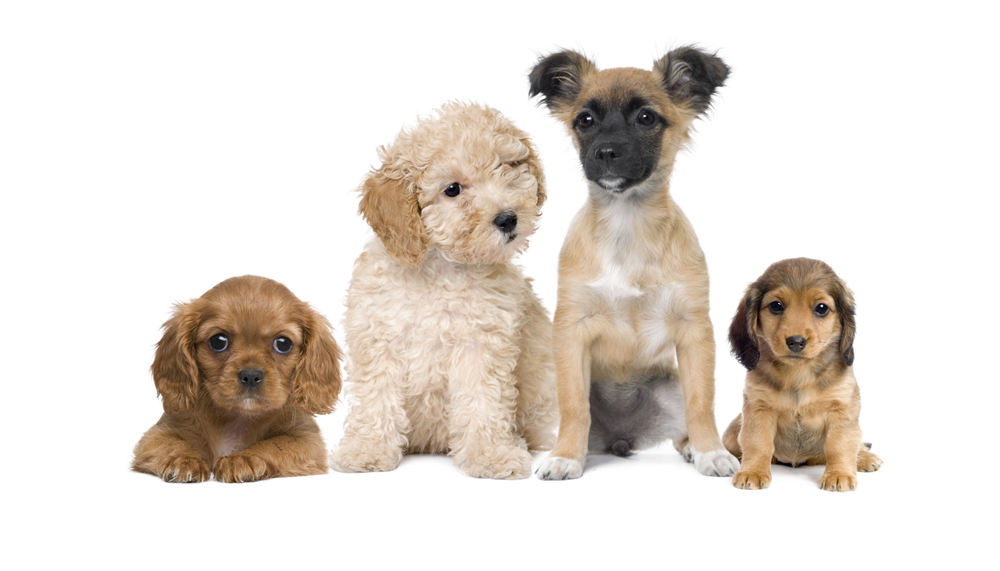

Menu
🏠 Início
📢 Campanhas
🐶 ONGs
⚖️ Leis
ℹ️ Sobre
|
O que é o Abril Laranja?
Abril Laranja é uma campanha dedicada à conscientização e prevenção contra a crueldade animal.
Durante todo o mês de abril, organizações, protetores independentes e a sociedade em geral se mobilizam
para chamar a atenção sobre os maus-tratos que muitos animais ainda sofrem, além de promover atitudes
mais responsáveis e empáticas.
A campanha tem como principal objetivo educar as pessoas sobre a importância do respeito aos animais, incentivando
a adoção responsável, o combate ao abandono e a denúncia de casos de violência. Maus-tratos podem incluir
negligência, agressões físicas, falta de alimentação adequada, abandono e exploração indevida, práticas que infelizmente
ainda são comuns em diversas regiões.
Além disso, o Abril Laranja também reforça a importância de políticas públicas
voltadas ao bem-estar animal, como leis mais rigorosas, fiscalização eficiente e programas de castração. A participação da sociedade é essencial, seja apoiando ONGs, adotando animais resgatados ou simplesmente
disseminando informações.
Mais do que uma campanha, o Abril Laranja é um convite à reflexão sobre a forma como os seres humanos se
relacionam com os animais. Promover o respeito e a proteção é um passo fundamental
para construir uma sociedade mais justa e compassiva para todos os seres vivos.

|